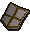
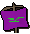
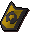
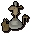

")
Construction - Workshop
Introduction
At level 15 you unlock the ability to build a workshop. A fun and useful room for Crafting, Smithing and using your Construction level to make money, the workshop is an important room for your house.
Key Features

The workbench is central to this room, it is where you can make money from your Construction level. Dependent on the level of your workbench, you can construct flat-packed items. For example with your workbench, you can use the same materials to make a rocking chair to make a flatpacked version of it. You still get the same experience for making the item. You can then sell this item to another player who is unable to make the item, but wants it. They simply use the flatpacked version with the hotspot.
The repair bench hotspot is a very useful one. Basic benches can repair broken staves and arrows, if you change this to a whetstone, you can sharpen old rusty swords. If your Construction level allows it, you could even make an armour stand, where you can repair Barrows armour for much less! The cost is dependent on your Smithing level. If your Smithing level is 1, the cost will be nearly the same as normal. With 99 Smithing, the repair cost will be practically halved.
More fun in the workshop is found at the heraldry hotspot. With the ability to paint your own family crest on steel or rune full helms, you can wear your crest into battle. If you upgrade this to a shield easel, you can paint your crest on a kiteshield! If your Construction level is high enough, you can even make a large banner displaying your family crest to carry around. Note that you cannot remove a crest or paint over it once it has been applied.
Clockmaking is also started in this room. The clockmaking space allows you to make clockwork pieces, or even clockwork toys, if your Crafting level allows it.
The Hotspots

- Workbench
- Heraldry
- Repair
- Tool
- Clockmaking
- Room
The Items
Workbench
| Item | Level required |
Materials required |
Uses | Experience gained |
|||||||
![[image]](../../img/main/kbase/skills/construction/items/workshop/wood_bench.gif) Wooden workbench |
17 |
![[image]](../../img/main/kbase/skills/construction/items/plank.gif) Plank |
x 5 | ![[image]](../../img/main/kbase/items/tools/steel_nails.gif) Nails |
x 5 | You can build flatpack items here (up to level 20 Construction). | 143 | ||||
![[image]](../../img/main/kbase/skills/construction/items/workshop/oak_bench.gif) Oak workbench |
32 |
![[image]](../../img/main/kbase/skills/construction/items/o_plank.gif) Oak plank |
x 5 | You can build flatpack items here (up to level 40 Construction). | 300 | ||||||
![[image]](../../img/main/kbase/skills/construction/items/workshop/steel_framed_bench.gif) Steel framed bench |
46 |
Oak plank |
x 6 | ![[image]](../../img/main/kbase/items/bars/steel_bar.gif) Steel bar |
x 4 | You can build flatpack items here (up to level 60 Construction). | 440 | ||||
![[image]](../../img/main/kbase/skills/construction/items/workshop/bench_vice.gif) Bench with vice |
62 |
Steel framed bench |
Upgrade | Oak plank |
x 2 | Steel bar |
x 1 | You can build flatpack items here (up to level 80 Construction). | 140 | ||
![[image]](../../img/main/kbase/skills/construction/items/workshop/bench_lathe.gif) Bench with lathe |
77 |
Bench with vice |
Upgrade | Oak plank |
x 2 | Steel bar |
x 1 | You can build all flatpack items here. | 140 | ||
Heraldry
| Item | Level required |
Materials required |
Uses | Experience gained |
||||
![[image]](../../img/main/kbase/skills/construction/items/workshop/pluming_stand.gif) Pluming stand |
16 |
Oak plank |
x 2 | Used to colour steel or rune full helms in your family crest colours. | 120 | |||
![[image]](../../img/main/kbase/skills/construction/items/workshop/shield_easel.gif) Shield easel |
41 |
Oak plank |
x 4 | Used to colour steel or rune full helms and kiteshields in your family crest colours. | 240 | |||
![[image]](../../img/main/kbase/skills/construction/items/workshop/banner_easel.gif) Banner easel |
66 |
Oak plank |
x 8 | ![[image]](../../img/main/kbase/skills/construction/items/cloth1.gif) Cloth |
x 2 | Used to make a wieldable banner in your family crest colours. | 510 | |
Heraldic items
Please note: The helmet/shield you paint will look the same regardless of if it is steel or rune, the difference between the two is the bonuses the helmet/shield offers.
| Item | Crafting level required |
Items required | Crafting experience |
|
![[image]](../../img/main/kbase/skills/construction/items/heraldic/helm_arrav.gif) Steel helmets |
38 |
![[image]](../../img/main/kbase/armour/melee/steel_full.gif) Steel full helm |
37 | |
Rune helmets |
38 |
![[image]](../../img/main/kbase/armour/melee/rune_full.gif) Rune full helm |
37 | |
![[image]](../../img/main/kbase/skills/construction/items/heraldic/shield_arrav.gif) Steel Kiteshields |
43 |
 Steel kiteshield |
40 | |
Rune Kiteshields |
43 |
![[image]](../../img/main/kbase/armour/melee/rune_kite.gif) Rune kiteshield |
40 | |
![[image]](../../img/main/kbase/skills/construction/items/heraldic/banner_arrav.gif) Banners |
48 |
Plank x 1 |
Cloth x 1 |
42 |
| Crest | Requirements | Helmet | Shield | Banner |
| Arrav | Shield of Arrav | |
|
|
| Asgarnia | None | ![[image]](../../img/main/kbase/skills/construction/items/heraldic/helm_asgarnia.gif) |
![[image]](../../img/main/kbase/skills/construction/items/heraldic/shield_asgarnia.gif) |
![[image]](../../img/main/kbase/skills/construction/items/heraldic/banner_asgarnia.gif) |
| Dorgeshuun | The Lost Tribe | ![[image]](../../img/main/kbase/skills/construction/items/heraldic/helm_dorgeshuun.gif) |
![[image]](../../img/main/kbase/skills/construction/items/heraldic/shield_dorgeshuun.gif) |
![[image]](../../img/main/kbase/skills/construction/items/heraldic/banner_dorgeshuun.gif) |
| Dragon | Dragon Slayer | ![[image]](../../img/main/kbase/skills/construction/items/heraldic/helm_dragon.gif) |
![[image]](../../img/main/kbase/skills/construction/items/heraldic/shield_dragon.gif) |
![[image]](../../img/main/kbase/skills/construction/items/heraldic/banner_dragon.gif) |
| Fairy | Lost City | ![[image]](../../img/main/kbase/skills/construction/items/heraldic/helm_fairy.gif) |
![[image]](../../img/main/kbase/skills/construction/items/heraldic/shield_fairy.gif) |
|
| Guthix | 70 |
![[image]](../../img/main/kbase/skills/construction/items/heraldic/helm_guthix.gif) |
![[image]](../../img/main/kbase/skills/construction/items/heraldic/shield_guthix.gif) |
![[image]](../../img/main/kbase/skills/construction/items/heraldic/banner_guthix.gif) |
| H.A.M. | None | ![[image]](../../img/main/kbase/skills/construction/items/heraldic/helm_ham.gif) |
![[image]](../../img/main/kbase/skills/construction/items/heraldic/shield_ham.gif) |
![[image]](../../img/main/kbase/skills/construction/items/heraldic/banner_ham.gif) |
| Horse | Toy horse in inventory | ![[image]](../../img/main/kbase/skills/construction/items/heraldic/helm_horse.gif) |
![[image]](../../img/main/kbase/skills/construction/items/heraldic/shield_horse.gif) |
![[image]](../../img/main/kbase/skills/construction/items/heraldic/banner_horse.gif) |
| Jogre | None | ![[image]](../../img/main/kbase/skills/construction/items/heraldic/helm_jogre.gif) |
![[image]](../../img/main/kbase/skills/construction/items/heraldic/shield_jogre.gif) |
![[image]](../../img/main/kbase/skills/construction/items/heraldic/banner_jogre.gif) |
| Kandarin | None | ![[image]](../../img/main/kbase/skills/construction/items/heraldic/helm_kandarin.gif) |
![[image]](../../img/main/kbase/skills/construction/items/heraldic/shield_kandarin.gif) |
![[image]](../../img/main/kbase/skills/construction/items/heraldic/banner_kandarin.gif) |
| Misthalin | None | ![[image]](../../img/main/kbase/skills/construction/items/heraldic/helm_misthalin.gif) |
![[image]](../../img/main/kbase/skills/construction/items/heraldic/shield_misthalin.gif) |
 |
| Money | Costs 500,000 coins | ![[image]](../../img/main/kbase/skills/construction/items/heraldic/helm_money.gif) |
![[image]](../../img/main/kbase/skills/construction/items/heraldic/shield_money.gif) |
![[image]](../../img/main/kbase/skills/construction/items/heraldic/banner_money.gif) |
| Saradomin | 70 |
![[image]](../../img/main/kbase/skills/construction/items/heraldic/helm_saradomin.gif) |
![[image]](../../img/main/kbase/skills/construction/items/heraldic/shield_saradomin.gif) |
![[image]](../../img/main/kbase/skills/construction/items/heraldic/banner_saradomin.gif) |
| Skull | Skulled while talking to Herald | ![[image]](../../img/main/kbase/skills/construction/items/heraldic/helm_skull.gif) |
![[image]](../../img/main/kbase/skills/construction/items/heraldic/shield_skull.gif) |
![[image]](../../img/main/kbase/skills/construction/items/heraldic/banner_skull.gif) |
| Varrock | None | ![[image]](../../img/main/kbase/skills/construction/items/heraldic/helm_varrock3.gif) |
 | ![[image]](../../img/main/kbase/skills/construction/items/heraldic/banner_varrock2.gif) |
| Zamorak | 70 |
![[image]](../../img/main/kbase/skills/construction/items/heraldic/helm_zamorak.gif) |
![[image]](../../img/main/kbase/skills/construction/items/heraldic/shield_zamorak.gif) |
![[image]](../../img/main/kbase/skills/construction/items/heraldic/banner_zamorak.gif) |
Repair
| Item | Level required |
Materials required |
Uses | Experience gained |
||||
![[image]](../../img/main/kbase/skills/construction/items/workshop/repair_bench.gif) Repair bench |
15 |
Oak plank |
x 2 | Used to repair bent arrows and broken staves. | 120 | |||
![[image]](../../img/main/kbase/skills/construction/items/workshop/whetstone.gif) Whetstone |
35 |
Oak plank |
x 4 | ![[image]](../../img/main/kbase/skills/construction/items/limestone_brick.gif) Limestone brick |
x 1 | Used to repair broken arrows, staves and sharpen rusty swords. | 260 | |
|  Armour stand |
55 |
Oak plank |
x 8 | Limestone brick |
x 1 | Used to repair broken arrows, staves, rusty swords, damaged armour and Barrows items. | 500 | |
Tool
| Item | Level required |
Materials required |
Uses | Experience gained |
||||
![[image]](../../img/main/kbase/skills/construction/items/workshop/tools1.gif) Tool store 1 |
15 |
Oak plank |
x 2 | Provides: saw, hammer, chisel and shears. |
120 | |||
![[image]](../../img/main/kbase/skills/construction/items/workshop/tools2.gif) Tool store 2 |
25 |
Tool store 1 |
Addition | Oak plank |
x 2 | Provides: bucket, spade and tinderbox. |
120 | |
![[image]](../../img/main/kbase/skills/construction/items/workshop/tools3.gif) Tool store 3 |
35 |
Tool store 2 |
Addition | Oak plank |
x 2 | Provides: brown apron, glassblowing pipe and needle. |
120 | |
![[image]](../../img/main/kbase/skills/construction/items/workshop/tools4.gif) Tool store 4 |
44 |
Tool store 3 |
Addition | Oak plank |
x 2 | Provides: moulds: amulet, necklace, ring, holy symbol and tiara. |
120 | |
![[image]](../../img/main/kbase/skills/construction/items/workshop/tools5.gif) Tool store 5 |
55 |
Tool store 4 |
Addition | Oak plank |
x 2 | Provides: rake, spade, trowel, seed dibber and watering can. |
120 | |
Clockmaking
| Item | Level required |
Materials required |
Uses | Experience gained |
||||
![[image]](../../img/main/kbase/skills/construction/items/workshop/craft_table1.gif) Crafting table 1 |
16 |
Oak plank |
x 4 | You can craft toy horsies here. | 240 | |||
![[image]](../../img/main/kbase/skills/construction/items/workshop/craft_table2.gif) Crafting table 2 |
25 |
Crafting table 1 |
Upgrade | ![[image]](../../img/main/kbase/skills/construction/items/molten_glass1.gif) Molten glass |
x 1 | You can craft toy horsies and clockwork mechanisms here. | 1 | |
![[image]](../../img/main/kbase/skills/construction/items/workshop/craft_table3.gif) Crafting table 3 |
34 |
Crafting table 2 |
Upgrade | Molten glass |
x 2 | You can craft toy horsies, clockwork mechanisms, clockwork soldiers and clockwork dolls here. | 2 | |
![[image]](../../img/main/kbase/skills/construction/items/workshop/craft_table4.gif) Crafting table 4 |
42 |
Crafting table 3 |
Upgrade | Oak plank |
x 2 | You can craft toy horsies, clockwork mechanisms, clockwork soldiers, clockwork dolls, clockwork mice, clockwork cats, watches and sextants here. | 120 | |
Crafting table toys
Using the above benches you can use your Crafting level to make wooden and clockwork toys.
| Item | Level required |
Items required | Crafting experience |
Released image | |||||||
![[image]](../../img/main/kbase/skills/construction/items/clockwork.gif) Clockwork |
8 |
Steel bar |
x 1 | 15 | n/a | ||||||
![[image]](../../img/main/kbase/skills/construction/items/toy_horsey.gif) Toy horsey |
10 |
Plank |
x 1 | 15 | n/a | ||||||
![[image]](../../img/main/kbase/skills/construction/items/wooden_cat.gif) Wooden cat* |
10 |
![[image]](../../img/main/kbase/skills/construction/items/fur.gif) Fur |
x 1 | Plank |
x 1 | 15 | n/a | ||||
![[image]](../../img/main/kbase/skills/construction/items/workshop/clock_soldier.gif) Soldier |
13 |
Clockwork |
x 1 | Plank |
x 1 | 15 | ![[image]](../../img/main/kbase/skills/construction/items/workshop/soldier.gif) |
||||
![[image]](../../img/main/kbase/skills/construction/items/workshop/clock_doll.gif) Doll |
18 |
Clockwork |
x 1 | Plank |
x 1 | 15 | ![[image]](../../img/main/kbase/skills/construction/items/workshop/doll.gif) |
||||
![[image: penguin]](../../img/main/kbase/skills/construction/items/workshop/penguin.gif "penguin") Penguin+ |
30 |
Clockwork |
x 1 | Plank |
x 1 | ![[image: silk]](../../img/main/kbase/items/misc/silk.gif "silk") Silk |
x 1 | 15 | ![[image: penguin]](../../img/main/kbase/skills/construction/items/workshop/live_penguin.gif "penguin") |
||
![[image]](../../img/main/kbase/skills/construction/items/workshop/clock_mouse.gif) Mouse |
33 |
Clockwork |
x 1 | Plank |
x 1 | 15 | ![[image]](../../img/main/kbase/skills/construction/items/workshop/mouse.gif) |
||||
![[image]](../../img/main/kbase/skills/construction/items/workshop/clock_cat1.gif) Cat |
85 |
Clockwork |
x 1 | Plank |
x 1 | 30 | ![[image]](../../img/main/kbase/skills/construction/items/workshop/cat1.gif) |
||||
* You must have started The Great Brain Robbery to craft wooden cats.
+ You must have started Cold War to craft clockwork penguins.

More articles in
Construction (Members Only)
|
|
|
Further Help
If this article does not help you, you may find the following sections of the RuneScape site helpful:
|
|